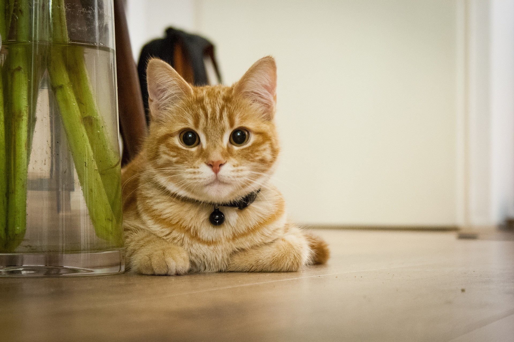

起油鍋，油熱了之後加入蛋，在鍋中用鍋鏟快速攪拌至凝固。
加入蒜末炒香之後再加入蝦仁。
再放入白飯，將白飯翻炒至米飯鬆散開。
加入醬油、鹽和黑胡椒炒勻後，起鍋前再加入蔥花拌勻。
起鍋。

臭豆腐介紹 鴨鴨鴨介紹 鐵板牛排介紹 三寶飯介紹
練習用音樂、影片
Your browser does not support the audio element. Your browser does not support the video tag.